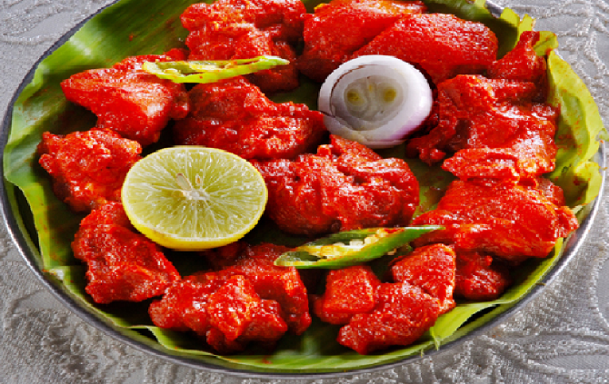

Turkey/chicken (boneless, skinless) - 1/2 lb (app. 250 gms)
Ajinomoto - 1/2 tsp
Pepper powder - 2 tsp
Egg - 1
Corn flour - 2 tbsp
Ginger garlic paste - 1 tsp
Salt - 1 tsp
Oil - for frying
Cumin Seeds - 1/4 tsp
Curry leaves - 5
Chilly powder - 1 tsp
Cumin powder - 1/2 tsp
Coriander powder - 1/2 tsp
Ajinomoto - 1/2 tsp
Red food color - 1/4 tsp
Red Chilly Garlic Sauce - 3 tbsp
Ginger garlic paste - 1 tsp
Garlic - 5-6 cloves(minced)
Oil - 1 tbsp
Salt - to taste
Cilantro - for garnish (finely chopped)
Onion- for garnish (chopped lengthwise)
Lemon juice - few drops
Wash and cut boneless skinless turkey/chicken into bite size pieces.
Mix the turkey pieces with all the ingredients from list 1 and let it marinate for 20-30 minutes.
Heat oil in a pan and fry the turkey/chicken pieces. Drain excess oil using paper towel and keep aside.
Heat oil in another pan. Add cumin seeds and fry till it splutters.
Add curry leaves, garlic, ginger garlic paste and fry for a minute stirring continuously to avoid burning.
Now add cumin powder, chilli powder, coriander powder, ajinomoto, chilli garlic sauce and red food color.
After half a minute add turkey/chicken pieces to the mixture. Toss everything together and switch off.
Sprinkle few drops of lemon juice, garnish with onions and cilantro. The chicken / turkey 65 is ready to be served.